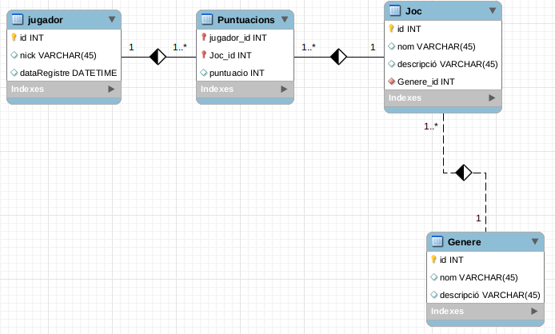

1. Desfassament objecte-relacional
Els Sistemes de Gestió de Bases de Dades (SGBD) es basen principalment en el model Entitat-Relació (E/R), on la informació s'emmagatzema en diverses taules relacionades entre si. És una tecnologia senzilla i eficient, que ha resistit al pas dels anys i que encara és el model utilitzat per la majoria de bases de dades i SGBD actualment. Malgrat el seu èxit, el model té algunes limitacions, com la representació de informació mal estructurada o complexa.
Els models conceptuals ens ajuden a modelar una realitat complexa i es basen en un procés d'abstracció de la realitat. Cada model té una manera de capturar aquesta realitat, però tots ells estan més propers a la mentalitat humana que a la memòria d'un ordinador.
Quan modelitzem una base de dades, fem servir el model conceptual d'Entitat-Relació i posteriorment fem un procés de transformació en taules i normalització d'aquest model per obtenir un model de dades relacional.
En el cas de la programació orientada a objectes, intentem representar la realitat mitjançant objectes i les relacions entre ells. Aquest és un altre tipus de model conceptual, però que té com a objectiu representar la mateixa realitat que el model relacional.
Així doncs, tenim dues aproximacions diferents per representar la realitat d'un problema: el Model Relacional de la base de dades i el model Orientat a Objectes de les nostres aplicacions.
1.1. Representació de la informació amb el model relacional
El model relacional es basa en taules i la relació entre elles:
- Cada taula té tantes columnes com atributs volem representar i tantes files com registres o elements d'aquest tipus conté.
- Les taules tenen una clau primària, que identifica cada un dels registres, i pot estar formada per un o més atributs.
- La relació entre taules es representa mitjançant claus externes, que consisteixen en incloure en una taula la clau primària d'una altra taula, com a referència a aquesta. Quan s'elimina un registre d'una taula, la clau primària del qual és referenciada per un altre, s'ha de garantir que es manté la integritat referencial de la base de dades. Aleshores, abans d'aquesta eliminació d'una clau primària, podem:
- No permetre l'eliminació (NO ACTION),
- Realitzar l'eliminació en cascada, eliminant també tots els registres que feien referència a la clau primària del registre eliminat (CASCADE),
- Establir a null (SET NULL), de manera que la clau externa que feia referència a la clau primària de l'altra taula prengui el valor de
NULL.
- Els diferents camps de les taules també poden tenir certes restriccions associades, com ara:
- Restricció de valor no nul, de manera que el camp no pot ser nul en cap cas,
- Restricció d'unicitat en un o diversos camps, de manera que el valor ha de ser únic a tota la taula.
- Restricció de domini, o el que és el mateix, pot tenir un conjunt de valors possibles per defecte.
Atenció
Les claus primàries tenen ambdues propietats: no nules i úniques.
1.1.1. Exemple
Una base de dades per emmagatzemar informació sobre jugadors, jocs, etc., pot ser així:

Implementada amb el SGBD MySQL:
1.2. Representació de la informació amb el model orientat a objectes
A l'igual que l'entitat-relació, el model orientat a objectes és un model de dades conceptual, però que dóna importància a la modelització dels objectes.
Un objecte pot representar qualsevol element conceptual: entitats, processos, accions... Un objecte no només representa les característiques o propietats, sinó que també es centra en els processos que pateixen. En termes del model orientat a objectes, diem que un objecte és dades més operacions o comportament.
A la unitat introductòria ja vam revisar la programació orientada a objectes, així que ens limitarem a una breu revisió dels conceptes principals:
- Un objecte és una entitat amb certes propietats i cert comportament.
- En termes de POO, les propietats es coneixen com a atributs, i el conjunt dels seus valors determina l'estat de l'objecte en un moment donat.
- El comportament està determinat per una sèrie de funcions i procediments que anomenem mètodes, i que modifiquen l'estat de l'objecte.
- Un objecte també tindrà un nom amb el qual s'identifica.
- Una classe és una abstracció d'un conjunt d'objectes, i un objecte ha de pertànyer necessàriament a alguna classe.
- Les classes defineixen els atributs i mètodes que els objectes d'aquesta classe tindran.
- Un objecte es diu que és una instància d'una classe.
El mateix exemple que hem representat recentment, amb una representació orientada a objectes podria ser:

Com podem veure, té una estructura similar, a la qual també hem afegit alguns mètodes com ara getters i setters. A més, les diferents classes no tenen un atribut identificador, ja que cada objecte s'identifica a si mateix. Aquí tenim una petita aproximació de com implementaríem aquesta jerarquia en Java.
La classe Genere és una classe POJO, que només emmagatzema informació (nom i descripció del tipus de joc) i implementa getters i setters.
La classe Joc emmagatzema el nom, la descripció i el gènere del joc. A diferència del model relacional, on el que s'emmagatzema seria una clau externa al gènere, ja que aquí no tenim claus externes, emmagatzemem l'objecte mateix (la referència).
La classe Registre presenta la relació entre Jugador i Joc (quan un jugador juga a un joc) i emmagatzema els punts i una referència al joc.
I finalment, la classe Jugador emmagatzema el sobrenom i la data de registre per a cada jugador, i després, un array amb tots els jocs que el jugador ha jugat:
La interfície Set i la classe HashSet
Set és una interfície del paquet java.util que tracta una col·lecció o conjunt d'elements sense ordre i sense duplicats.
D'altra banda, HashSet és una classe que implementa la interfície Set i que es basa en una taula de hash, una estructura de dades que permet localitzar objectes basant-se en una clau que indica la posició a la taula, permetent l'accés directe a l'element, el que els fa ideals per a cerques, insercions i eliminacions.
1.3. Model Relacional vs Model Orientat a Objectes
Conceptualment, el model orientat a objectes és un model dinàmic, que es centra en els objectes i en els processos que aquests experimenten, però que no té en compte, des del principi, la seva persistència. Hem de ser capaços, per tant, de guardar els estats dels objectes de manera permanent i carregar-los quan l'aplicació els necessiti, així com mantenir la consistència entre aquestes dades emmagatzemades i els objectes que les representen a l'aplicació.
Una manera d'oferir aquesta persistència als objectes seria utilitzar un SGBD Relacional, però ens trobarem amb algunes complicacions. La primera, des d'un punt de vista conceptual, és que el model Entitat-Relació es centra en les dades, mentre que el model orientat a objectes es centra en els objectes, entesos com a grups de dades i les operacions realitzades sobre ells.
Una altra diferència, força important, és la vinculació dels elements entre un model i un altre. D'una banda, el model relacional afegeix informació addicional a les taules en forma de clau externa, mentre que en el model orientat a objectes no necessitem aquesta dada externa, sinó que la vinculació entre objectes es fa a través de referències entre ells. Un objecte, per exemple, no necessitarà una clau primària, ja que l'objecte s'identifica per si mateix.
Com hem vist a l'exemple de les seccions anteriors, les taules en el model relacional tenien una clau primària per identificar els objectes i claus externes per expressar les relacions, mentre que en el model orientat a objectes aquestes desapareixen, expressant les relacions entre objectes mitjançant referències. A més, la manera com s'expressen aquestes relacions també és diferent. En el model relacional, per exemple, el registre de puntuacions és una taula que enllaça la taula de jugadors amb la taula de jocs i afegeix la puntuació del jugador en el joc. D'altra banda, en la implementació en Java que hem fet, tenim objectes de tipus Registre que emmagatzemen una puntuació i una referència al joc, però és la classe Jugador la que manté el conjunt de registres de les seves puntuacions.
D'altra banda, en manipular les dades, cal tenir en compte que el model relacional disposa de llenguatges (principalment SQL) dissenyats exclusivament per a aquest propòsit, mentre que en un llenguatge orientat a objectes funciona de manera diferent, per la qual cosa serà necessari incorporar mecanismes que permetin fer aquestes consultes des del llenguatge de programació. A més, quan obtenim els resultats de la consulta, també ens trobem amb un altre problema, i és la conversió dels resultats. Quan es fa una consulta a una base de dades, sempre es retorna un resultat en forma de taula, per la qual cosa serà necessari transformar aquests resultats en estats dels objectes de l'aplicació.
Totes aquestes diferències impliquen el que es coneix com a desfassament relacional-objecte, i que ens obligarà a fer determinades conversions entre objectes i taules quan volem guardar la informació en un SGBD. En aquesta unitat i en les següents, veurem com superar aquest retard des de diferents enfocaments.